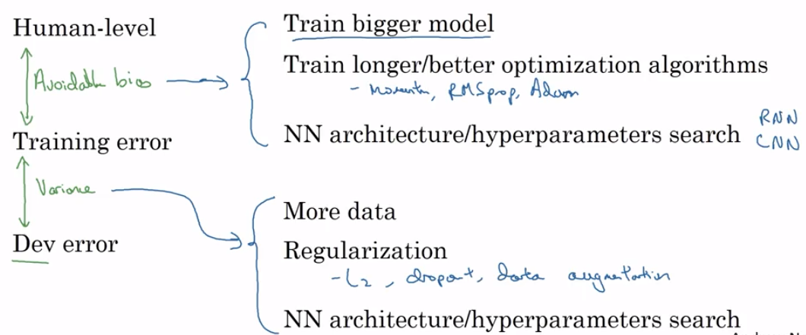

Model Improvement Strategy Heuristics
In the Bias, Variance, and Regularization notebook, we touched on different strategies for improvimg model performance, depending on where we were seeing deficiencies in the cost/loss functions. This notebook will elaborate and provide a more-general approach.
Different Benchmarks
Irrespective of which accuracy measure you focus on (precision, recall, etc), when deciding where and how to make model improvements, it’s all about comparing accuracy levels between benchmarks.
We’ll use three comparison benchmarks for model performance:
- Training Error
- Dev Error
- Human-Level
Training Error
The final error value you have at the end of training. This is the optimization condition that guides your model training.
Dev Error
The error that your trained model has when you run your testing/holdout dataset through it.
“Human-Level” Error
For whatever you’re trying to predict, the reasonable level of accuracy you’d expect a human to get. For instance:
- Simple computer vision object-classification problems have a very low human-level error
- More esoteric things like sports outcome prediction have a higher level of error
Relating the Benchmarks
Depending on where you’re getting the biggest discrepancies in accuracy, you’ll want to employ different model-tuning strategies.
Avoidable Bias is the difference between Human-Level accuracy and your Training error. If this is high, there’s obviously something we’re missing network-design-wise if a human can reliably outperform our complicated network.
Variance is the difference between the Training and Dev Errors. If this is high, it means that we have overfit to our training set and our model doesn’t generalize well.
Andrew Ng recommends the following heuristics.
from IPython.display import Image
Image('images/model_improvement_heuristics.png')